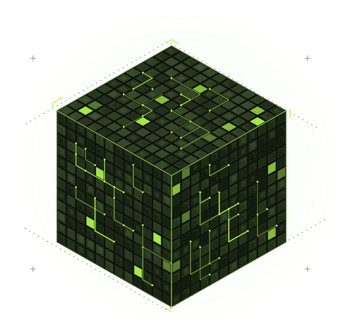

A shared local brain.
Semantic memory and a temporal knowledge graph carry context across sessions. Your source records stay the authority; memory helps agents find them.
Inside the memory layerIndependent. Agent-first. Yours.
Give your agents a shared brain and the tools to act. Memory, coordination, and native control — running on a system you own.
Local installation verified on Apple Silicon macOS.

01 / THE SYSTEM
Bring your agents, context, and tools together. Each installation starts with its own identity, private data stores, and provider profile.
Semantic memory and a temporal knowledge graph carry context across sessions. Your source records stay the authority; memory helps agents find them.
Inside the memory layerConductors run agent work. Inbox carries scoped messages and assignments. Beads records the work, its dependencies, and the evidence of completion.
Explore orchestrationWork with files, processes, durable jobs, and a dedicated browser. Native UI tools use normal OS permissions. Explicitly select your configured remote hosts and discover the tools they expose.
See the native tools02 / YOUR COLLECTIVE
Start with one machine. Add your own hosts explicitly, verify their identities, and discover their actual tools. Independent work can run concurrently within your capacity and permissions. Credentials stay on their target machines; operation receipts record outcomes.
Illustrative architecture. Generic machines and connections below represent an owner-configured system, not a live fleet. Your installation never joins another owner’s fleet automatically.
Follow the owner setup guideMEMORY · CONDUCTOR · INBOX · BEADS
03 / INITIALIZE
Install your own system first. Connect your own accounts. Add web access when you need it.
Use an Apple Silicon Mac with at least 20 GB of free disk, an ordinary user session, and your own provider account.
Replace yourname with a stable lowercase owner
ID.
Setup downloads pinned runtimes and models into your private BORG home.
Read your owner-specific onboarding plan, complete the normal Codex login, then run the readiness checks.
git clone https://github.com/h3ro-dev/borg.git
cd borg
./install.sh --owner yourname
"$HOME/.borg/bin/borg" onboard
"$HOME/.borg/bin/borg" auth codex
"$HOME/.borg/bin/borg" doctor
These commands install and start local services. Codex recall and
capture hooks are configured automatically in the dedicated Codex
profile. The read-only onboard command prints your
next steps; provider sign-in and live verification remain
separate.
Connect an existing, running BORG to ChatGPT through your own Cloudflare Access application and tunnel.
Keep the host awake and BORG services running.
Create your own tunnel, hostname, and Access policy with Managed OAuth.
Add your MCP URL in your client’s available controls, complete sign-in, and test a reversible action.
An MCP URL connects to a system you already run. It does not install a computer fleet or give access to anyone else’s BORG.
Client plan and workspace controls determine which actions are available. Local health and a successful web sign-in are separate checks.
Follow the web setup guideConfiguration belongs on your machine. This website never asks for account credentials, tokens, or tunnel secrets.
Inspect readiness, discover the current tool schemas, and read your system’s status before asking agents to act.
Health checks distinguish responding services, authenticated memory, trusted hooks, and a pinned provider login. A running process alone does not prove a completed operation.
Operation & recovery"$HOME/.borg/bin/borg" onboard
"$HOME/.borg/bin/borg" doctor
"$HOME/.borg/bin/borg" tools browser_
"$HOME/.borg/bin/borg" call borg_status
"$HOME/.borg/bin/bd" list --json
Examples use the default home. If you chose a different location,
use that home’s bin/ directory. Inspect operation
receipts before repeating a write after a lost connection.
New identities. Empty stores. Private provider profiles. No inherited account sessions or connection to the author’s infrastructure.
Three LoRA adapters are included, but inactive. Validate exact base-model compatibility and your real extraction workflow before promotion. Default extraction uses pinned Qwen.
Read the model cardsBORG-authored code and included adapters are MIT licensed. Runtime dependencies and base models retain their own licenses, documented in the source.
Licenses & third-party notices